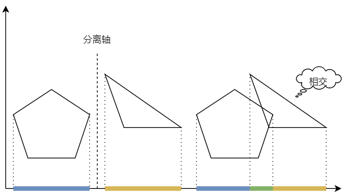
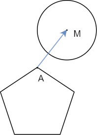
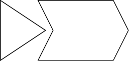

在游戏中，涉及到碰撞检测的场景十分广泛——子弹打中角色、玩家移动时会被场景阻挡、……「如何高效地判断两个物体是否接触」，是游戏开发中必须思考的一个问题。虽然我们可以用 **AABB 包围盒(Axis-Aligned Bounding Boxes)**进行粗略的判断，但对于检测精度要求高的场景，AABB 便不能满足了，需要一种更加精确的检测方法。
#分离轴
分离轴定理(Seperating Axis Theorem, SAT)适用于判断两个二维凸多边形之间是否相交。
在几何学中，凸多边形是一种简单多边形，其不存在边自我相交的情况，且任两点之间连成的直线皆位于多边形内部，这个特性与内部为凸集的简单多边形等价。在凸多边形中，所有内角都小于或等于180度，而在严格凸多边形中，所有内角都严格小于180度。——摘自维基百科
SAT 揭示了这样一条性质：如果两个凸多边形不相交，那么它们之间必然存在「间隙」，也就必然存在一条直线，将这两个图形划分到两片区域，这条直线就是「分离轴」。
在这种情况下，想象存在一束与分离轴平行的光线，使得这两个图形在一条与分离轴垂直的直线（投影轴）上形成两条线段投影。如果这两个图形不相交，则投影必然也不相交。如下图所示
虽然不一定保证对于任意的分离轴，两个图形形成的投影都不相交，但只要存在一条分离轴使得投影不相交，那么就认为这两个图形不相交——这就是 SAT 的核心思想了。
#利用分离轴定理检测碰撞
由上文引出两个问题：
-
二维空间中的直线数量是无穷大，我们不可能遍历所有直线，那么该如何精准的找出分离轴？
-
对于给定的分离轴，如何判断投影是否相交？
#如何找分离轴？
直接抛结论：如果两个凸多边形不相交，则这两个多边形中必然存在一条边 ，其与投影轴平行，且法向量与我们要找的分离轴平行。
这很好理解，如果两个凸多边形不相交，那么必然存在一条边，同一图形的其他各边都在此边的同旁。
那么可以遍历所有边的法向量，求两个图形在投影轴上的投影，如果某一次迭代使得投影不相交，意味着找到了分离轴，也就能得出「两者不相交」的结论。
#如何求投影？
根据所学知识，无论分离轴和投影轴如何平移，图形在投影轴上的投影的相对关系是保持不变的。为了简化计算，我们可以将投影轴平移至通过原点。假设投影轴所在直线对应单位向量 ，那么图形在其上的投影线段可以表示为 ，其中 属于某个闭区间（下面称为「 区间」）。如果两个图形的 区间相交，那么投影线段也就相交了。
向量 可以由图形中两个相邻点对应的二元组做差，然后单位化得到。
接下来问题又转换为，求两个图形对应的 区间是否相交。不难发现，区间端点必然对应着图形某个顶点，所以只要遍历图形的顶点，作投影点，记为 ，求出 的最值即可。这个问题就可以用向量点积来计算。
顶点 是由一个二元组表示的，也可以视为向量 ，那么从 出发作 的垂线，与 的交点就是投影点，且该投影点可以表示为 ，其中 。
求区间是否相交就容易多了，不再赘述。
#额外的讨论
#圆与圆的碰撞检测
这个情况很简单，因为对于圆我们总是维护两个信息：圆心 和半径 。那么判断两个圆是否相交，只需判断两个圆心的距离 是否小于等于半径之和 。
#多边形与圆的碰撞检测
这个情况需要找到多边形离圆心 最近的点 ，此时向量 就是投影轴，而圆的 区间端点则是 与圆形成的两个交点处取得。
#为什么只能是凸多边形
如下图所示，有一个图像是凹多边形。此时尽管两个图形并不相交，但是不存在一条分离轴将两个图形分开。
